LLM Agents : MCP, Skills
Large Language Models : A Hands-on Approach
RECAP
- AI Agent: LLM + Planning + Tooling
- Anatomy of an Agent
- Agent Loop Patterns
- Tool Use
MCP (Model Context Protocol)
- With standard function calling, each tool integration is custom-built on the client side
- eg : If a company had 3 AI chatbots and wanted to connect to 10 services, they needed 3 × 10 = 30 unique integrations.
- Unsustainable at scale with N x M growth in tools and clients.

MCP (Model Context Protocol)
- MCP Spec standardizes how instructions are sent to the server and how results are returned
- With MCP, the N × M custom integrations are replaced by N + M integrations (N clients + M tools), since any client can call any tool as long as they both speak MCP.
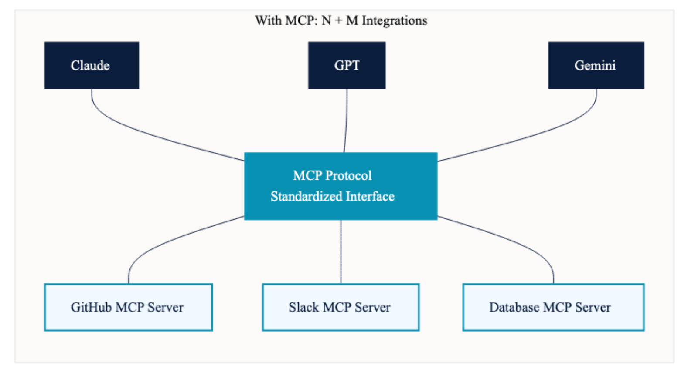
The USB-C Analogy

MCP vs APIs
| Aspect | Traditional API | MCP |
|---|---|---|
| Purpose | Expose a service’s functionality to any consumer (web apps, mobile apps, scripts) | Standardize how LLMs specifically discover and invoke tools |
| Consumer | Any software: browsers, mobile apps, backend services, CLI tools | LLM-based applications (Claude Desktop, Cursor, custom agents) |
| Discovery | Manual: read API docs, write integration code, handle authentication | Automatic: client calls tools/list and receives all available tools with schemas |
| Integration effort | Custom code per API per client (N × M problem) | One protocol for all: connect once, access everything (N + M) |
| Schema format | Varies: OpenAPI/Swagger, GraphQL, custom docs | Standardized JSON tool schemas with name, description, parameters, and return type |
| Who writes the glue code? | The client developer writes API calls, auth, error handling, rate limiting | The server developer wraps their API once; clients connect with zero custom code |
| Communication | HTTP request/response (REST) or query/mutation (GraphQL) | JSON-RPC 2.0 over stdio (local) or HTTP/SSE (remote) with bidirectional messaging |
| Context awareness | None: APIs have no concept of LLM context windows or token budgets | Built-in: the MCP client manages what schemas and results enter the LLM’s context |
MCP Architecture

MCP Architecture
| Component | Role | Key Responsibilities |
|---|---|---|
| MCP Client | Intermediary between user/LLM and server | Manages LLM’s context window; decides what tool schemas to expose to LLM; decides what portion of tool results to feed to LLM; maintains conversation loop |
| MCP Host | The application the user runs (Claude Desktop, Cursor, your script) | Owns the LLM and the UI; spawns one MCP Client per connected server; holds the credentials and the user-approval prompts |
| MCP Server | Hosts and executes tools | Exposes tool schemas, resources, and prompts; executes tool functions; returns results to client; does NOT manage the LLM’s context |
| LLM | The reasoning brain | Decides which tools to call and in what order; produces structured tool call responses; reasons over tool results; produces final natural language output |
The LLM never communicates directly with the MCP server. All communication flows through the MCP client.
MCP Primitives
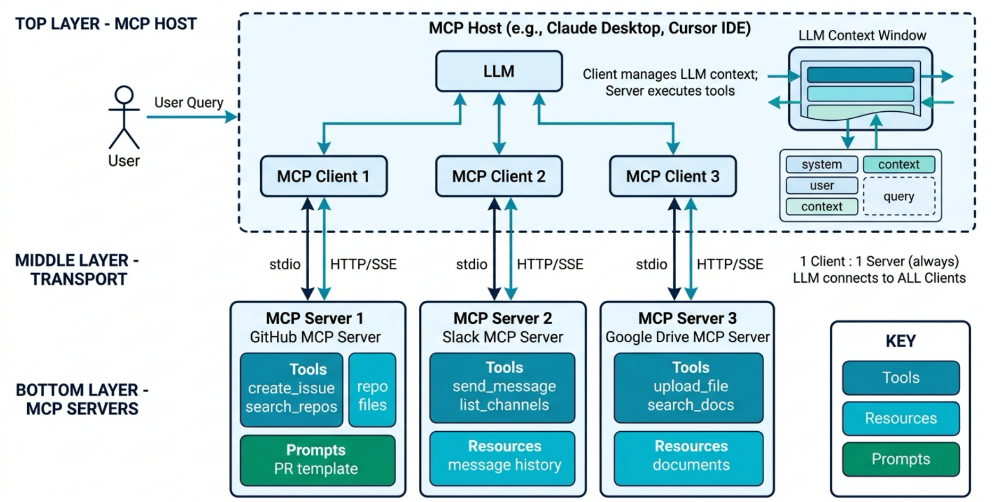
MCP Primitives
| Primitive | Description | Example (GitHub MCP) | Who Controls Usage |
|---|---|---|---|
| Tools | Functions the LLM can invoke via structured calls | issue_write (open/update an issue), issue_read, search_code(query), get_file_contents(owner, repo, path) |
Model at runtime |
| Resources | Read-only data the client pulls into context by URI, without spending a tool call | Repository file contents, PR diffs | Client/application |
| Prompts | Reusable prompt templates the user invokes, usually from a menu | A “review this PR” template that pre-fills the diff and the team’s checklist | User |
Tools is the primitive that actually got adopted.. The GitHub server ships ~90 tools across toolsets (
repos,issues,pull_requests,actions,code_security), and documents almost nothing under Resources or Prompts.
Transport Layer and Communication
Transport Layer:
Communication
- JSON-RPC 2.0
The MCP Lifecycle
Three Stages:
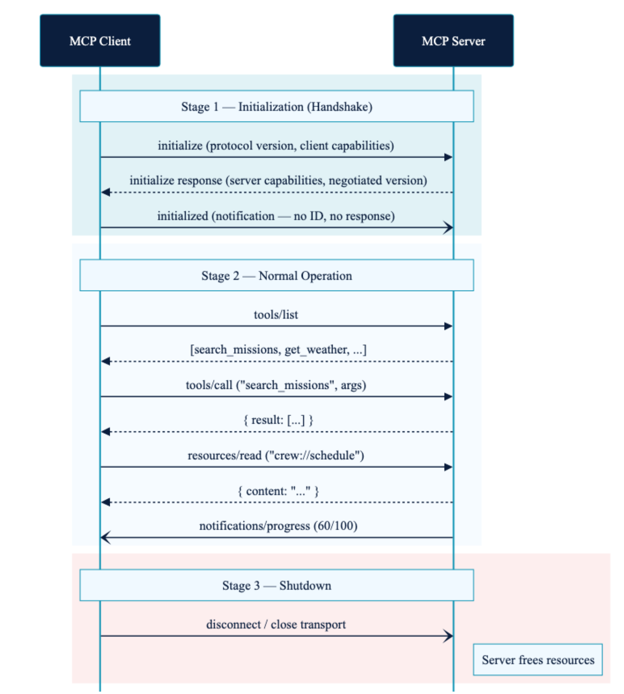
The MCP Lifecycle
Stage 1 : Initialization
Handshake - Client sends Initialize Request [protocol version (e.g., 2024-11-05), client capabilities (roots, sampling), and implementation info (client name/version)]
Server responds with Initialize Response [protocol version, server capabilities (tools, resources), and implementation info (server name/version)]
Client sends Initialized Notification [A notification (no ID) confirming the connection is successful. After this, the session is active.]
Compatibility Negotiation
- Client and server compare protocol versions and capabilities to ensure compatibility. If incompatible, the client can choose to proceed with limited functionality or terminate the session.
The MCP Lifecycle
Capabilities Exchange
- Client Capabilities
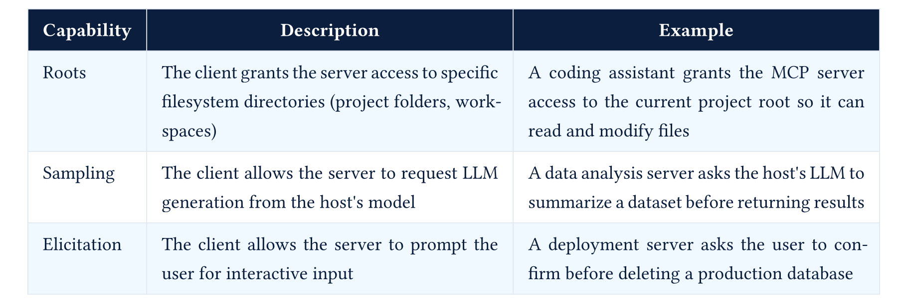
The MCP Lifecycle
- Server Capabilities
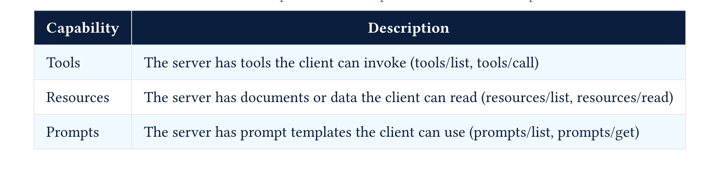
The MCP Lifecycle
Server to Client Requests : Bidirectional
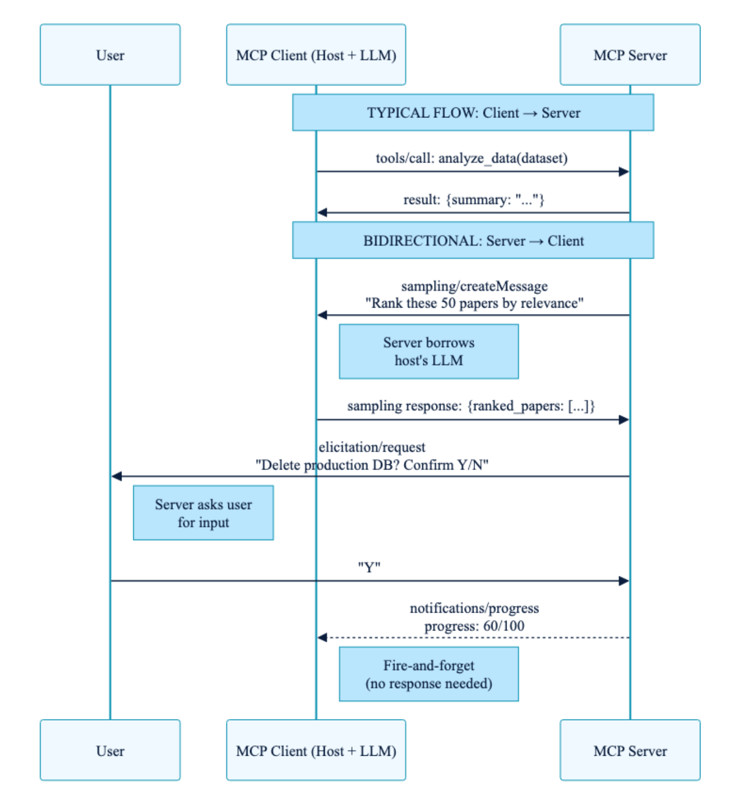
MCP Stage 2 : Active Session
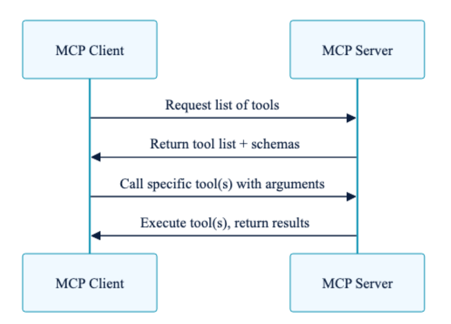
1. Capabilities Discovery
tools/list: Client requests list of available tools with schemas and metadataresources/list: Client requests list of available resources with metadataprompts/list: Client requests list of available prompts with metadata
2. Tool and Resource Usage
- Based on user queries, the client calls specific tools
tools/callor reads specific resourcesresources/read.
MCP Stage 3 : Shutdown
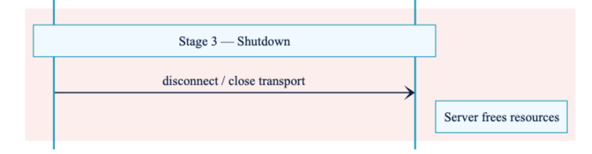
What Changes : spec 2026-07-28
Until 2025-11-25 |
From 2026-07-28 |
|---|---|
initialize request + notifications/initialized handshake |
Removed- no handshake at all |
| Capabilities negotiated once, per connection | Carried on every request in _meta |
Mcp-Session-Id header holds session state |
Removed - servers mint explicit handles instead |
tools/list could vary per connection |
Same answer for everyone - cacheable |
Why: a stateless server is easy to deploy and scale horizontally. No sticky sessions, no shared session store.
Connection : server/discover
Servers MUST implement server/discover. It advertises supported protocol versions, capabilities, and identity.
- Clients MAY call it before anything else, for up-front version selection
- Or use it as a backward-compatibility probe on STDIO
- Version mismatch returns
UnsupportedProtocolVersionError
Every request carries its own context in _meta:
Multi Round-Trip Requests (MRTR)
The old way for a server to ask the client for something - roots/list, sampling/createMessage, elicitation/create - was a server-initiated request. Stateless servers can’t do that.
MRTR inverts it. The server answers the original request with a request of its own:
- Client calls
tools/call - Server replies
resultType: "input_required", with aninputRequestsfield - Client retries the original request, now carrying
inputResponses
Active Session : Discovery and Invocation
This part largely remains same
1. Discovery
tools/list- available tools with schemas and metadataresources/list- available resourcesprompts/list- available prompts
2. Invocation
tools/callto invoke,resources/readto fetch
New: list results are cacheable. They now carry ttlMs (freshness hint) and cacheScope (public / private), and servers SHOULD return tools in a deterministic order.
Deterministic ordering exists to raise LLM prompt-cache hit rates
Change Notifications : subscriptions/listen
The HTTP GET endpoint and resources/subscribe / unsubscribe are gone, replaced by one long-lived POST-response stream.
- Client opts in to specific types:
toolsListChanged,promptsListChanged,resourcesListChanged,resourceSubscriptions - Server acknowledges and tags each notification with
io.modelcontextprotocol/subscriptionId - Request-scoped notifications (
notifications/progress,notifications/message) still flow on the response stream of their own request
Also removed: ping, logging/setLevel, notifications/roots/list_changed, and SSE stream resumability (Last-Event-ID). A broken stream loses the in-flight request — the client re-issues it with a new request ID.
Deprecated
A formal feature lifecycle now applies: Active → Deprecated → Removed, with a minimum 12 months between deprecation and removal.
| Deprecated | Migrate to |
|---|---|
| Roots | Pass directories/files as tool parameters, resource URIs, or server config |
| Sampling | Integrate directly with the LLM provider’s API |
| Logging | stderr (stdio), or OpenTelemetry |
| HTTP+SSE transport | Streamable HTTP |
| OAuth Dynamic Client Registration | Client ID Metadata Documents |
Extensions and Tasks
Rather than growing the core protocol, new capability now ships as opt-in extensions, declared in ClientCapabilities / ServerCapabilities.
Tasks (io.modelcontextprotocol/tasks) was the first official extension — moved out of the core protocol, and directly relevant to us:
- Support for reliable, long-running agent work
- Polling via
tasks/getrather than a blockingtasks/result tasks/updatefor client-to-server input mid-task- Servers may return task handles unsolicited
Which Protocol to Build Against?
| Status today | |
|---|---|
SDK v1.x (2025-11-25, handshake) |
Stable. What you install by default. TS/Python v1.x keep getting fixes for ≥6 months |
SDK v2 (2026-07-28, stateless) |
Beta for the Tier-1 languages - Python, TypeScript, Go, C# |
The compatibility contract:
- A
2026-07-28client falls back to theinitializehandshake when it reaches an older server - A v2 server answers both
server/discoverand the legacy handshake - Upgrading to v2 is a breaking change you take on your own schedule
MCP Example Walkthrough
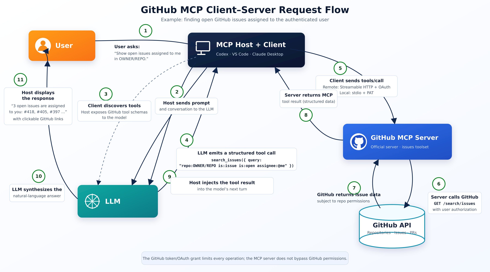
MCP Ecosystem
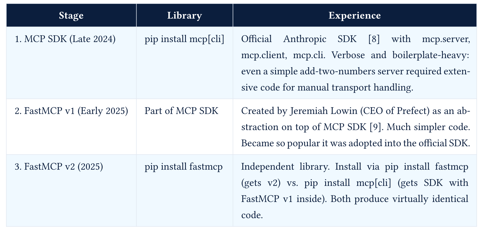
MCP Server Skeleton
from fastmcp import FastMCP
mcp = FastMCP("DB Query Server")
@mcp.tool(description="Run a database query and return results as JSON")
def run_query(query: str) -> str:
# Execute the query on the database
...
return "Query results as JSON string"
@mcp.resource("queries://list")
def get_queries() -> str:
# Return valid queries from JSON file
...
return "List of valid queries as JSON string"
mcp.run() # STDIO transport (local),
# mcp.run(transport="http", host="0.0.0.0", port=8000) # HTTP transport (remote)MCP Clients
- Claude Code, Cursor, VS Code all ship with MCP clients
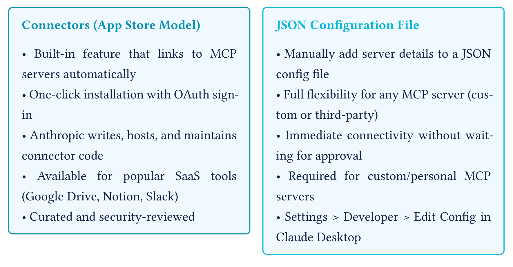
- MCP servers list - Awesome MCP Servers
MCP Clients
- To develop your own MCP client, you can use FastMCP, LangChain MCP Adapters or other MCP client libraries in your preferred programming language.
import asyncio
from fastmcp import Client, FastMCP
# In-memory server (ideal for testing)
server = FastMCP("TestServer")
client = Client(server)
# HTTP server
client = Client("https://example.com/mcp")
# Local Python script
client = Client("my_mcp_server.py")
async def main():
async with client:
# Basic server interaction
await client.ping() # note: removed in the 2026-07-28 revision
# List available operations
tools = await client.list_tools()
resources = await client.list_resources()
prompts = await client.list_prompts()
# Execute operations
result = await client.call_tool("example_tool", {"param": "value"})
print(result)
asyncio.run(main())Who does What?
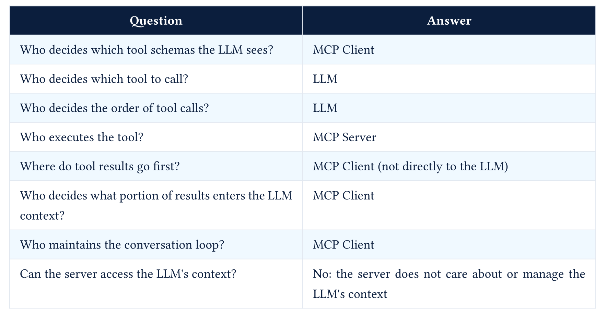
[DEMO] Build an MCP server, then a client for it
- A FastMCP server exposing 2–3 tools and one resource
- A custom client that connects to it (our agent from prev class)
- Point that same client at a third-party server Blender MCP
Skills
Skills are instructions in Markdown files. Agents read skills at runtime
Think of skills as “mini-manuals” or “onboarding guides” for specific tasks, tools, or domains that agents can refer to when needed.
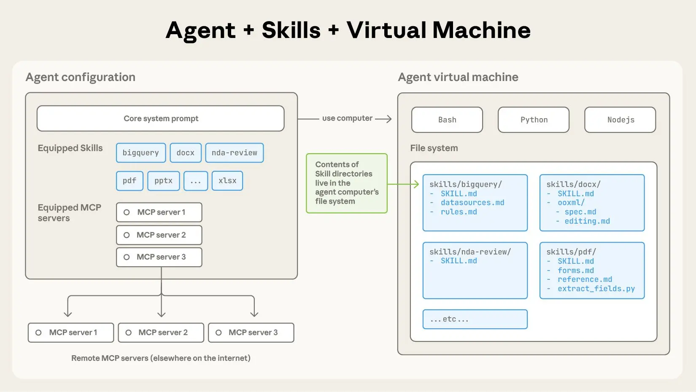
- Detailed Example : DOCX_SKILL.md
Writing Skills
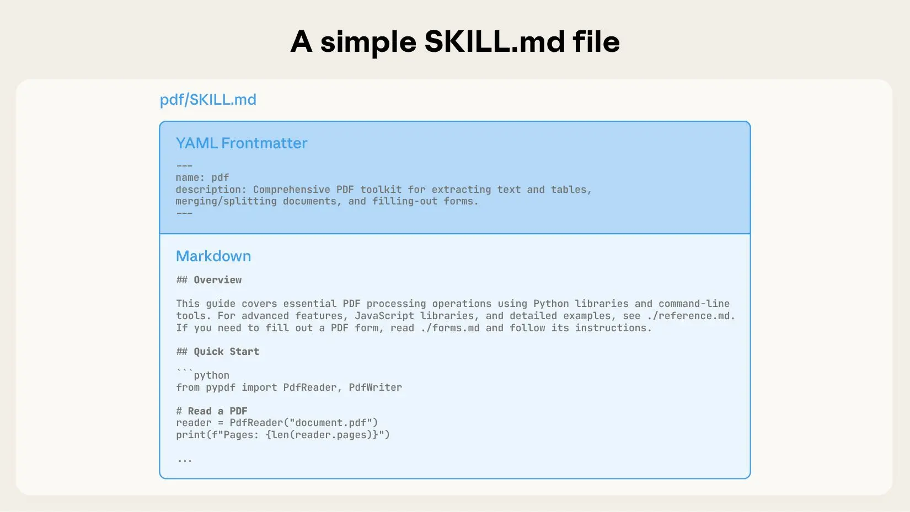
Writing Skills
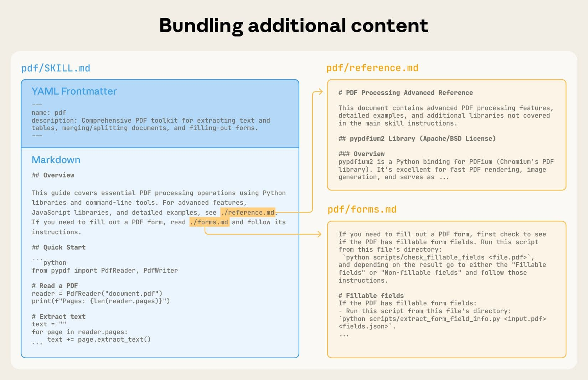
Using Skills in Context
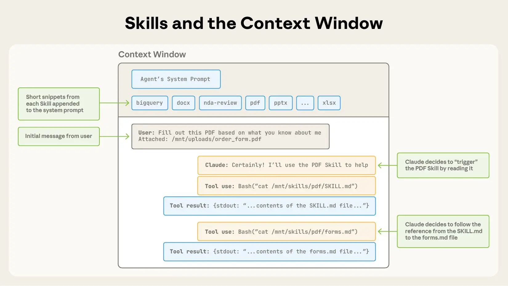
Skills with Bundled code
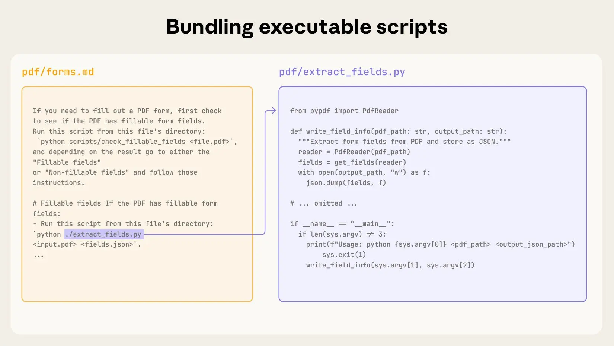
Developing and evaluating skills
- Start with evaluation: Identify gaps by running representative tasks and observing struggles.
- Build incrementally: Address shortcomings as they are identified.
- Structure for scale:
- Split
SKILL.mdwhen it becomes unwieldy. - Reference separate files to reduce token usage.
- Use code as both executable tools and documentation.
- Split
- Think from LLM’s perspective:
- Monitor usage for unexpected trajectories or overreliance.
- Optimize skill names and descriptions for triggering accuracy.
- Iterate with LLM:
- Capture successful approaches and common mistakes.
- Use self-reflection to determine necessary context.
[DEMO]
- Installing skills
- Ask your agent to read the skills or load them by restarting
Further Reading
- MCP spec
2025-11-25- Lifecycle, Transports - MCP spec
2026-07-28 - The 2026-07-28 Specification
- JSON-RPC 2.0 Specification
- Anthropic - Introducing the Model Context Protocol
- Anthropic Engineering - Code execution with MCP: building more efficient agents
- Anthropic Engineering - Equipping agents for the real world with Agent Skills
- anthropics/skills - DOCX SKILL.md
- Awesome MCP Servers
- FastMCP Documentation
- Agent Skills ecosystem report 2026